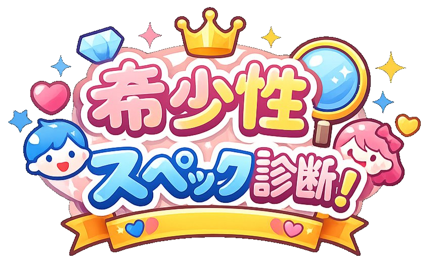

あなたのスペックを採点して
日本に何人いるかリアルな数字で見てみよう
👨
男性
女性目線で男性スペックを採点
婚活市場でのリアルな希少度がわかる
👩
女性
男性目線で女性スペックを採点
恋愛市場でのリアルな希少度がわかる
← トップに戻る
男性スペック希少度診断
女性目線であなたのスペックを採点。日本に何人いるか、リアルな数字で見てみよう。
← トップに戻る
0
/ 100
あなたと同等スペックの男性は日本に
💡 女性による男性評価軸（優先度順）
1
経済力
2
内面・性格
3
外見
4
生活力
5
ステータス
6
相性・気遣い
ランク一覧（あなたの位置）
カテゴリー別スコア
スコアアップのアドバイス
結果カードを保存してXにシェア
テキストのみXでシェア
もう一度診断する
← トップに戻る
← トップに戻る
女性スペック希少度診断
男性目線であなたのスペックを採点。日本に何人いるか、リアルな数字で見てみよう。
← トップに戻る
0
/ 100
あなたと同等スペックの女性は日本に
💡 男性による女性評価軸（優先度順）
1
外見
2
性格・内面
3
生活力
4
清潔感
5
育児意欲
6
経済力
7
気遣い
ランク一覧（あなたの位置）
カテゴリー別スコア
スコアアップのアドバイス
結果カードを保存してXにシェア
テキストのみXでシェア
もう一度診断する
← トップに戻る